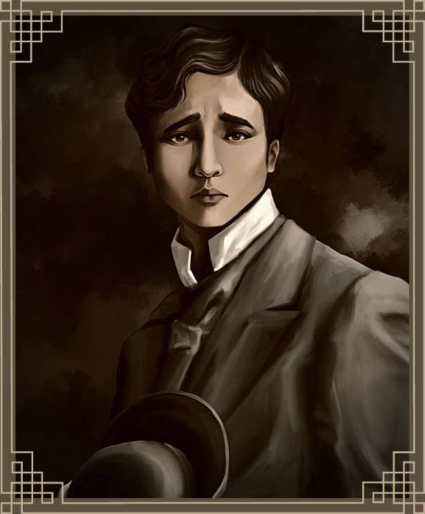
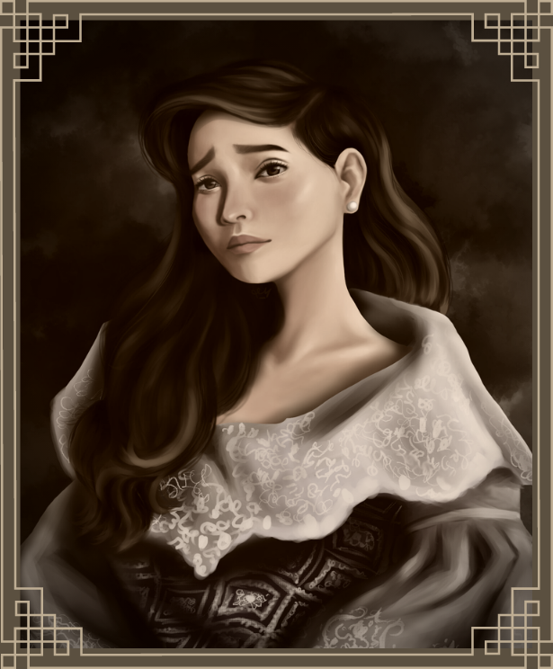

Characters, summary, vocabulary and analysis
MAIN CHARACTERS: Ibarra and Maria Clara
SIDE CHARACTERS: Boatman, Sinang, Victoria, Iday, Nenang, their mothers, and several of Ibarra’s friends.
VOCABULARY: Udyok=Urge, Hiya=Shame, Agahan=Breakfast, Buwaya=Crocodile, Batisan=Body of Water
SUMMARY: Ibarra and María Clara go on the planned outing the next morning, taking with them María Clara’s friends Sinang, Victoria, Iday, Nenang, their mothers, and several of Ibarra’s friends. Two boatmen—one elderly and one roughly the same age as Ibarra—row them to a remote beach, where they cast fishing rods in the hopes of catching something to eat. They eventually discover, though, that there’s a crocodile stuck in the muck beneath the boat. The younger boatman jumps into the water, lassoing the crocodile and bringing it above the surface level. As the crocodile thrashes about, it drags the boatman back into the water. Ibarra quickly dives in to save the man, driving his knife into the crocodile’s tender belly. “I owe you my life,” the boatman says after the ordeal is over. The group then goes back to celebrate in the woods surrounding Ibarra’s house.
ANALYSIS: Thankfully, Ibarra’s bravery in this scene wins him a devoted ally. In contrast to Sisa’s husband—who shamelessly wants something from Ibarra—the boatman declares that he “owe[s]” Ibarra. This alliance and loyalty becomes important later on, when Ibarra must face San Diego’s most powerful figures and a handful of detractors.